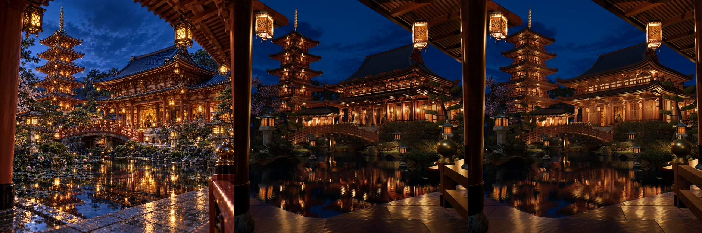
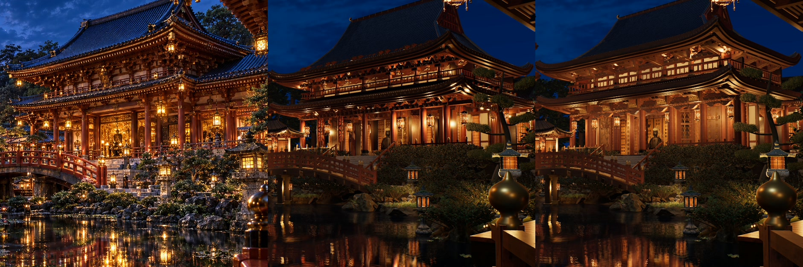
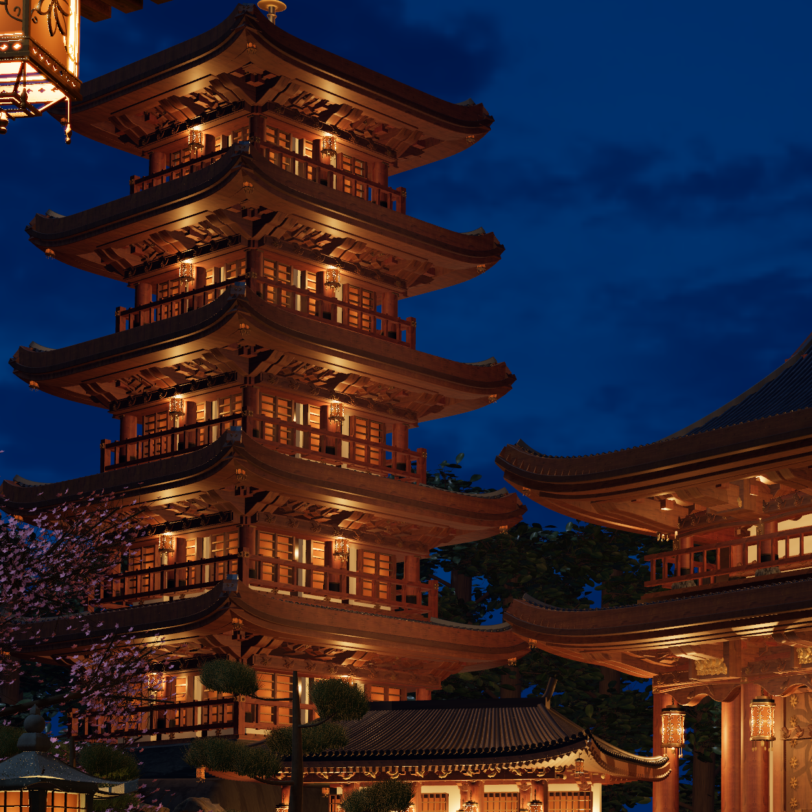

Scene09 · carried and occupied architectural mass181 R04
Reconstruction draft · visualAccepted: false
Source 61b811768614423f28ce67ecc99a2904ce1eadff39cefae1328fc561894c4fe1. The full reference frame, independent hall and tower subfrusta, and low three-quarter view are actual 1254px native captures through the official shared FIFO. Valid buffers establish render operation; photographic fidelity remains unaccepted.
Review and exact receipts · 11 protected modules · Actual CC BY176 source proof · Live canonical scene09
Supplied original photographPublic actual Toro158 R04 baselineActual native mass181 R04 draft

627px comparison derivatives only. The photograph and board are comparison inputs; no scene asset samples their pixels.
Original hall regionBaseline hall regionR04 hall region

 True native hall subfrustum, 1254px. Tall shafts, complete deep portals and leaves, closed carrying timbers and eight uniformly fitted source176 ornaments.
True native hall subfrustum, 1254px. Tall shafts, complete deep portals and leaves, closed carrying timbers and eight uniformly fitted source176 ornaments. Actual low three-quarter, 1254px. Separate occupied floors, returning galleries, full shafts and seated roof planes.
Actual low three-quarter, 1254px. Separate occupied floors, returning galleries, full shafts and seated roof planes.
True native tower subfrustum, 1254px. Fuller independently framed storeys, stepped carriers and closed floor necks at the retained top summit.Remaining gaps: regular and schematic fine carpentry and ornament, approximate night radiometry and native light transport, and existing garden/sky/sculpture/reflection differences. The donor cloud sculpture is a different CC BY artifact; its creator does not identify a culture or period. No photographic match, physical-render equivalence or finished film is claimed.